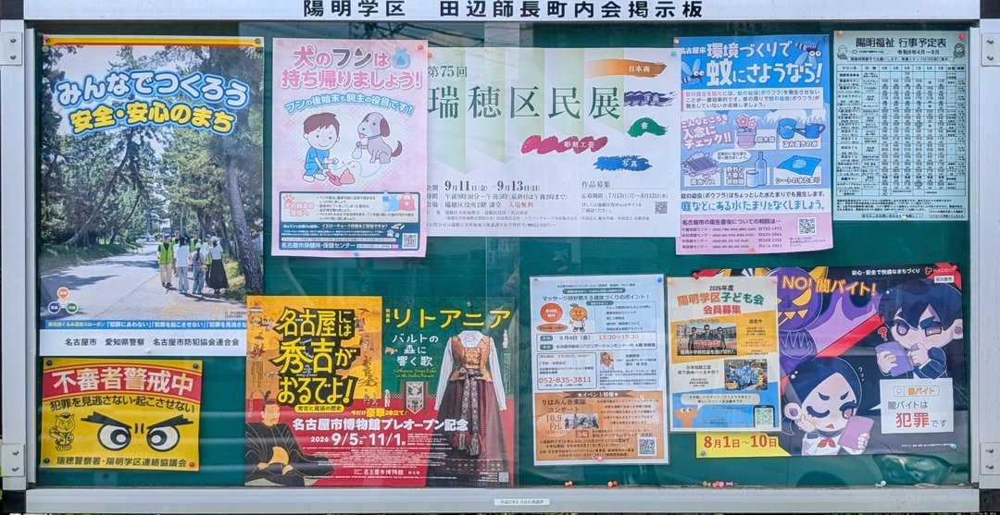

📱
YOMEI DIGITAL CIRCULAR
陽明学区
デジタル回覧板
いつでも、どこでも、街の最新情報を。
※ デジタル回覧板では、お祝い金申請や決算/予算等の会計情報など、内部のお知らせは含めず除いています。紙の回覧板もこれまで通り、引き続きお届けします！
📌 最新の町内会掲示板（※田辺師長町内会）

🔍 タップで拡大
📌
⭐️ このページを保存してください
次回からワンタップで最新号が読めるよう、この画面を「ホーム画面に追加」または「ブックマーク」にお願いします。
🍎
iPhone (Safari) の方：
画面下の「共有アイコン(四角から上矢印)」を押し、「ホーム画面に追加」を選択。
画面下の「共有アイコン(四角から上矢印)」を押し、「ホーム画面に追加」を選択。
🤖
Android (Chrome) の方：
画面右上の「メニュー(︙)」を押し、「ホーム画面に追加」を選択。
画面右上の「メニュー(︙)」を押し、「ホーム画面に追加」を選択。